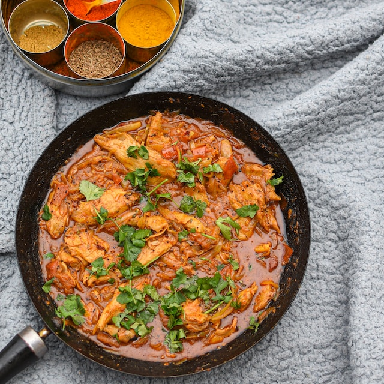

Chicken Curry
Description
Chicken curry is a flavorful and aromatic dish that has its roots in diverse culinary traditions, encompassing Indian, Thai, and other South Asian cuisines.
Renowned for its popularity and versatility, chicken curry is a dish that lends itself to various preparation methods, giving rise to a broad spectrum of regional variations.
The following description offers a comprehensive overview:
Ingredients
- 2 Ibs chicken breast, cut into 1 inch cubes
- ¼ cup vegetable oil
- 1 large onion (about 1 Ibs), chopped
- 2 tomatoes (about 1 Ibs total), diced, pureed, or blended
- 1 glove garlic, minced
- 2 tbsp garam masala
- 1 tsp salt
- 1 tsp paprika
- ¾ cup of whipping cream or heavy cream
Steps
- In a large pan, heat the oil over medium-low heat. Add the onions and slowly cook them until goldenn and carmelized, about 15 minutes.
- Add garlic and stir for about 1 minute. Add the garam masala, paprika and salt.
- Stir in the tomatoes and the cream and cook for 2 minutes.
- Add the chicken breast and simmer over medium-low heat, stirring occasionally until cooked through and meat is no longer pink, about 15 minutes.
- Serve over rice and garnish with cilantro.
Nutrition
- Calories: 452cal
- Cholesterol: 165mg
- Vitamin A: 1186IU
- Carbohydrates: 6g
- Sodium: 693mg
- Vitamin C: 11mg
- Protein: 40g
- Potassium: 856mg
- Calcium: 42mg
- Fat: 29g
- Fiber: 2g
- Iron: 1mg
- Saturated Fat: 16g
- Sugar: 2g